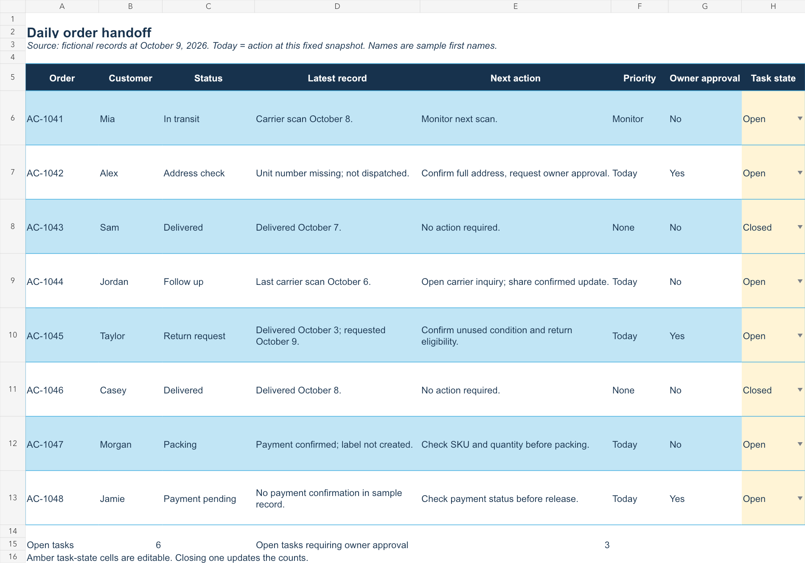
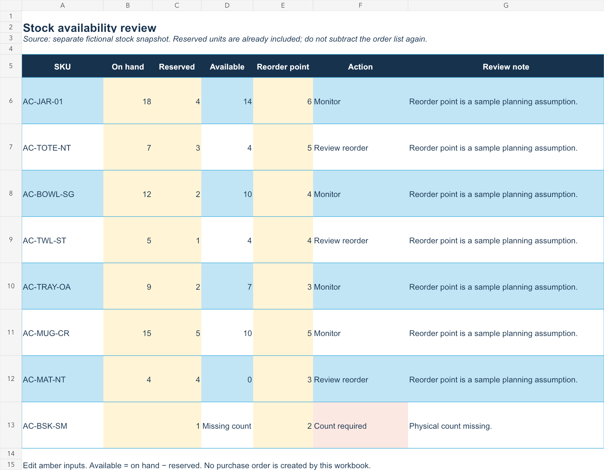

PROJECT 01 / FICTIONAL PRACTICE BRIEF
Catalog cleanup & daily store handoff
Alder & Coast is a fictional home-goods store. This exercise turns a small batch of uneven product entries, order notes and stock counts into a reviewable handoff.
The brief
Clean eight product records without inventing specifications. Review eight order records at an October 9 snapshot. Identify stock exceptions and prepare two customer replies.
What was produced
A three-tab workbook with original and proposed catalog fields, an order action list and stock formulas. The source values are fictional; the formulas and written handoff are usable work samples.
01 / PRODUCT DATA
Keep the original. Propose the correction.
The jar and the tray both arrive with AC-JAR-01. The worksheet flags both entries using a duplicate-count formula. AC-TRAY-OA is a proposed replacement, pending owner approval.

Original entry
TOTE BAG NATURAL cotton
Source brief: cotton, natural colour, open top, 38 × 42 cm, $18. Weight capacity not supplied.
Prepared product copy
Cotton Market Tote, Natural, 38 × 42 cm
A natural-colour cotton tote for everyday errands. The open-top bag measures 38 × 42 cm. Confirm the weight capacity before using it for heavy items.
Care instructions and load limit remain open questions.
02 / ORDERS
One next action per open record.
Six tasks are open, including three that need an owner decision. Closing an amber task-state cell updates both counts. “Today” means October 9 in this fixed practice snapshot.

03 / STOCK REVIEW
A missing count is not zero stock.
The worksheet calculates available stock as on-hand units minus reserved units. The tote, towels and placemat reach the sample reorder thresholds. The basket needs a physical count before availability can be calculated.

The stock snapshot is separate from the order list. Reserved units are already supplied, so the orders must not be subtracted again. Reorder thresholds are practice assumptions, not supplier recommendations.
04 / CUSTOMER REPLIES
Reply drafts with a clear next step.
ORDER AC-1044 / SHIPPING FOLLOW-UP
Subject: Update on order AC-1044
Hi Jordan,
I checked your order record. The latest carrier scan is from October 6, and there isn’t a newer update yet.
I’ll flag this for a carrier follow-up and share the next confirmed update with you. I don’t have a confirmed delivery date at the moment.
Thank you for your patience,
Alder & Coast Support
Internal note: open the carrier inquiry before sending. Do not mark the follow-up complete just because a reply has been drafted.
ORDER AC-1045 / RETURN REQUEST
Subject: Return request for order AC-1045
Hi Taylor,
Our record shows that your order arrived on October 3. Your request is within our sample store’s 14-day return-request window.
Please confirm whether the item is unused and let us know why you’d like to return it. I’ll pass those details for review and send the approved return instructions.
Best,
Alder & Coast Support
Internal note: this fictional policy requires unused condition and owner approval. No return label or refund has been issued.
05 / OWNER HANDOFF
The decisions that remain open.
| Record | Finding | Next decision |
|---|---|---|
| Tray / AC-JAR-01 | Source SKU conflicts with jar. | Approve a replacement SKU after checking store records. |
| Tote | Capacity and care not supplied. | Confirm from packaging or supplier; keep claims out meanwhile. |
| AC-1042 | Address correction before dispatch. | Approve the verified full address before fulfillment. |
| AC-1045 | Return requested within sample window. | Confirm condition and approve return instructions. |
| AC-1048 | Payment not confirmed. | Check the payment record before releasing the order. |
| AC-BSK-SM | On-hand count blank. | Complete a physical stock count. |
Handoff note
Catalog draft and order action list are ready for review. The tray identifier needs approval, and several product specifications remain unanswered. Stock review flags three reorder checks and one missing count. No listing, customer email, refund or order has been changed in a live system.
How to inspect the workbook
- In Catalog, compare the original and prepared titles. The duplicate check highlights the jar and tray source IDs.
- In Orders, change AC-1042 from Open to Closed. Open owner-approval tasks change from 3 to 2. Restore it afterward.
- In Stock, leave the basket count blank: it asks for a count. Enter 0: it flags an allocation problem. Enter 5: availability becomes 4.
Formula behavior was checked in the workbook creation engine. Excel/Google Sheets application testing has not been performed.